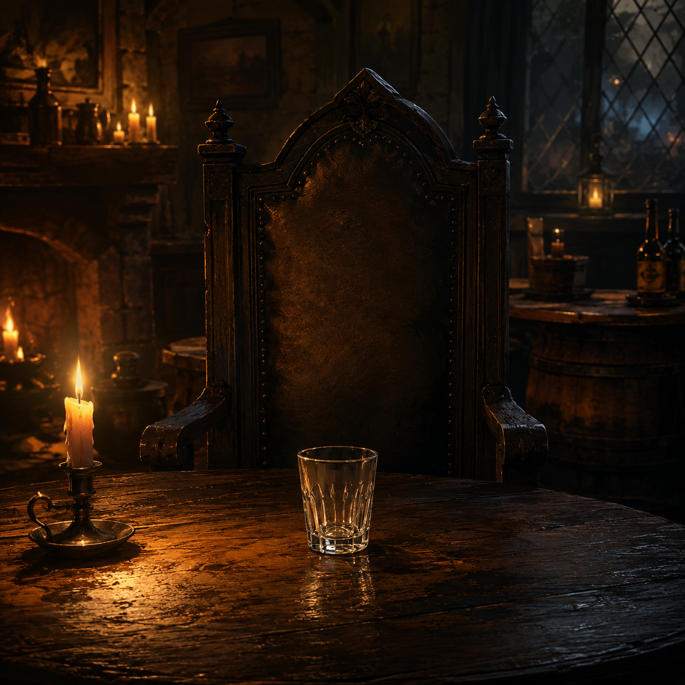

Current turn
Player 1
Phase
Place or drink
Round
1
Rule Summary
Each player holds one drawn card. Click a destination glass to place it. Drinking reveals 2 random cards at 5 units.

Drinking
Once a glass reaches 5 units, it is drunk. Reveal 2 random cards; Poison eliminates unless Antidote is also revealed.
Silent Guest
If Poison kills the Silent Guest, reveal both player roles. Each player gets one Final Toast turn, then drinks their own glass if it has 3 or more cards. If no player dies, the Guest wins.
Safe Drink
If the drinker survives, empty that glass, shuffle every card back into the draw deck unseen, and continue play.